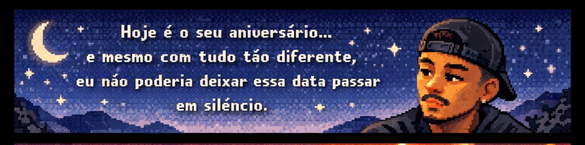
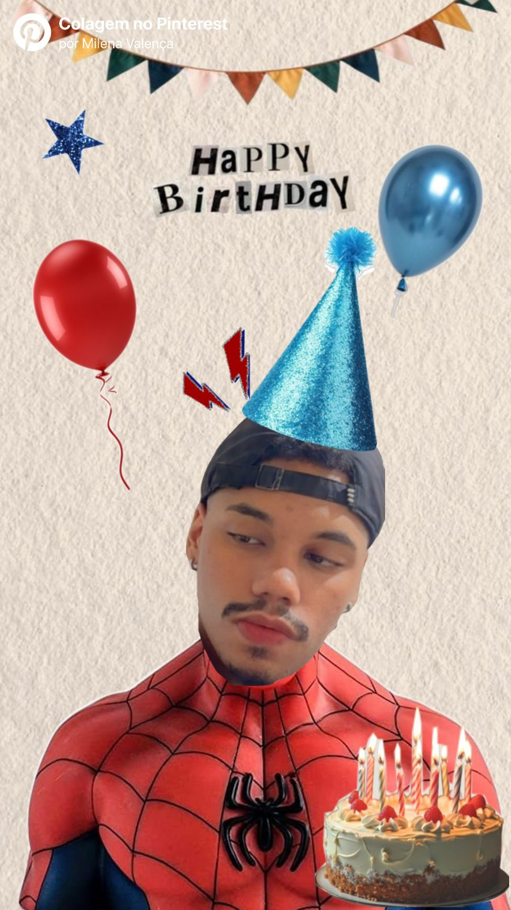

Abertura
Narrador
Toque em uma escolha para continuar.

Eu escolhi essa música porque ela me lembra muito um momento nosso: você ficava pedindo pra eu cantar o refrão várias vezes, até eu conseguir cantar do jeito certo.
E, enquanto eu tentava procurar ela, ouvi vários rap de anime no caminho... e isso me fez lembrar de muitos momentos nossos. Eu chorei, porque foi como voltar por alguns instantes pra memórias que ainda moram em mim de algum jeito.
Dica: a música começa no primeiro toque em “Começar história”.

